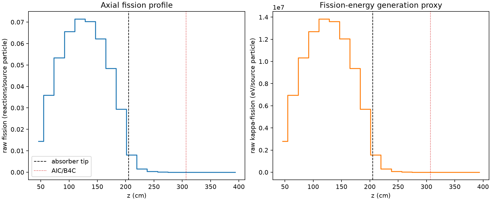
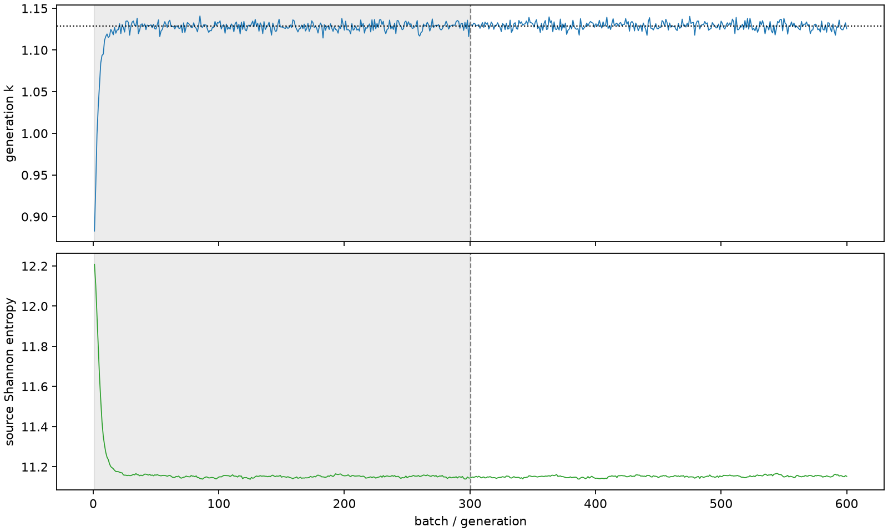

| field | value |
|---|---|
| experiment | V2-ADAPTIVE_01-0015 |
| k | 1.1286357186339893 |
| MC standard error | 0.00018110534818055213 |
| seconds | 1065.3754879879998 |
| acceptance | not_assessed |
| convergence | review_required |
Completed is output integrity only; physical and statistical review required. Zero tallies do not prove zero production or zero uncertainty.
| diagnostic | value |
|---|---|
| geometric fuel voxels | 5280 |
| zero fission tally voxels | 958 |
| low signal fuel voxels | 1855 |
| low signal fission share | 4.278332117404413e-05 |
| low signal kappa share | 4.2810051468442205e-05 |
| important fission share | 0.9500513776252907 |
| previous filter included | 3425 |
| duration estimate s | 1562.5173488400023 |
| actual minus estimate s | -497.14186085200254 |
| fission relative MC error | statistics |
|---|---|
| all_geometric_fuel | {"voxels": 5280, "positive_mean_voxels": 4322, "zero_mean_voxels": 958, "undefined_relative_error_voxels": 958, "median": 0.011814218895335734, "p95": 0.935506409748867, "maximum": 1.0000000000000002} |
| low_signal | {"voxels": 1855, "positive_mean_voxels": 897, "zero_mean_voxels": 958, "undefined_relative_error_voxels": 958, "median": 0.6203590999968007, "p95": 1.0, "maximum": 1.0000000000000002} |
| important_95pct | {"voxels": 2138, "positive_mean_voxels": 2138, "zero_mean_voxels": 0, "undefined_relative_error_voxels": 0, "median": 0.00639167324582748, "p95": 0.009115636918759214, "maximum": 0.012721500276984762} |
| outside_previous_filter | {"voxels": 1855, "positive_mean_voxels": 897, "zero_mean_voxels": 958, "undefined_relative_error_voxels": 958, "median": 0.6203590999968007, "p95": 1.0, "maximum": 1.0000000000000002} |
| kappa_fission relative MC error | statistics |
|---|---|
| all_geometric_fuel | {"voxels": 5280, "positive_mean_voxels": 4322, "zero_mean_voxels": 958, "undefined_relative_error_voxels": 958, "median": 0.011798633616063217, "p95": 0.9354429090954024, "maximum": 1.0000000000000002} |
| low_signal | {"voxels": 1855, "positive_mean_voxels": 897, "zero_mean_voxels": 958, "undefined_relative_error_voxels": 958, "median": 0.6196853108941158, "p95": 1.0, "maximum": 1.0000000000000002} |
| important_95pct | {"voxels": 2138, "positive_mean_voxels": 2138, "zero_mean_voxels": 0, "undefined_relative_error_voxels": 0, "median": 0.006384043508978017, "p95": 0.009106255233838052, "maximum": 0.01270589560527399} |
| outside_previous_filter | {"voxels": 1855, "positive_mean_voxels": 897, "zero_mean_voxels": 958, "undefined_relative_error_voxels": 958, "median": 0.6196853108941158, "p95": 1.0, "maximum": 1.0000000000000002} |
| axial bin | fission share | kappa-fission share |
|---|---|---|
| 1 | 0.03139321722693732 | 0.03139468696583531 |
| 2 | 0.07792091916991235 | 0.07792047301707772 |
| 3 | 0.11562442088269896 | 0.11562349709926728 |
| 4 | 0.14220863001352987 | 0.142207530656508 |
| 5 | 0.15484640666031108 | 0.15484515474795044 |
| 6 | 0.1523952141171466 | 0.1523940735110187 |
| 7 | 0.13501931833759634 | 0.13501836243402182 |
| 8 | 0.10494601114777946 | 0.10494487886935985 |
| 9 | 0.06386076862929882 | 0.06386022270476166 |
| 10 | 0.017558890800131403 | 0.017563007177720517 |
| 11 | 0.003313086904503845 | 0.0033145363798178975 |
| 12 | 0.0007152184703759936 | 0.0007155677698240818 |
| 13 | 0.0001591938594767272 | 0.00015928019417719028 |
| 14 | 3.0422567987309127e-05 | 3.0442557253978338e-05 |
| 15 | 7.0494509068495525e-06 | 7.053182666523027e-06 |
| 16 | 8.975603772167385e-07 | 8.985571745259231e-07 |
| 17 | 3.325789260666815e-07 | 3.3255547695852727e-07 |
| 18 | 1.6221037712159704e-09 | 1.6200876906737334e-09 |
| 19 | 0.0 | 0.0 |
| 20 | 0.0 | 0.0 |
Histories include the inactive-to-active transition at batch 300. kappa-fission approximates fission energy production, not total heat deposition.

